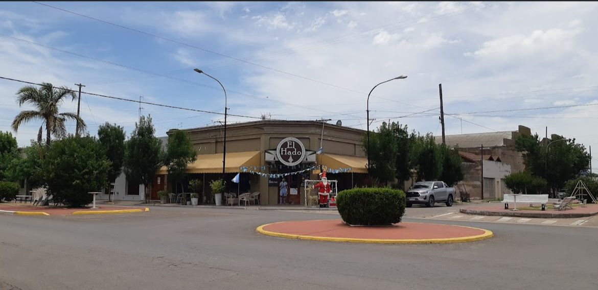
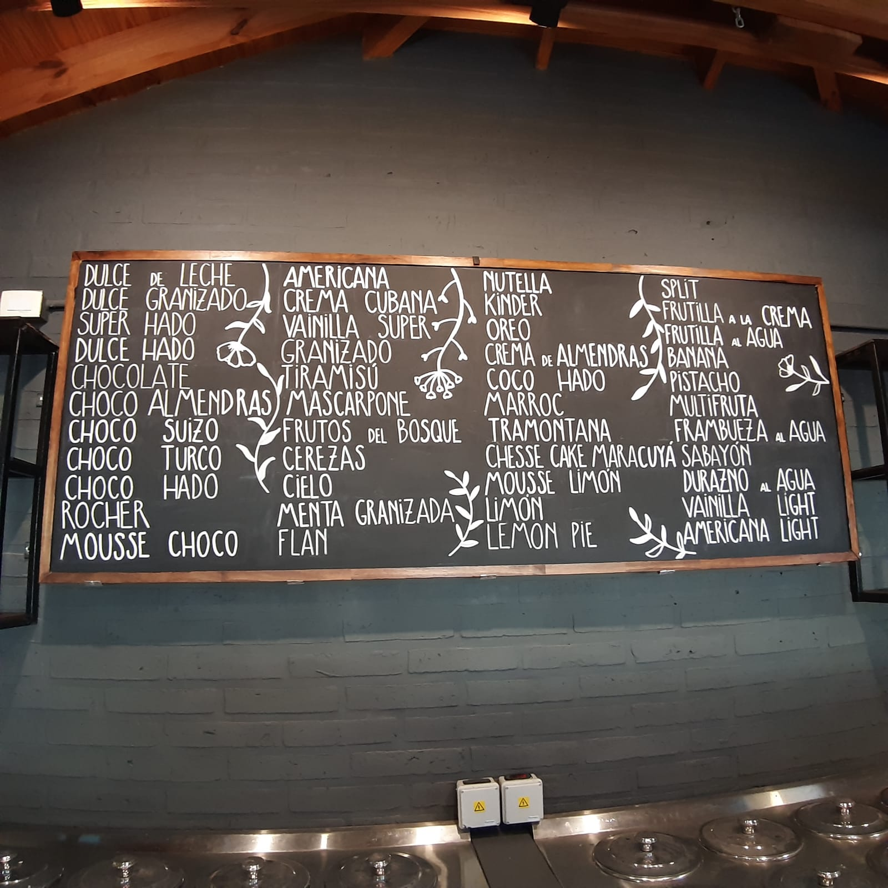

Somos una empresa familiar que tuvo inicio en el año 2007 en la localidad de Carhue nos dedicamos a fabricar helados totalmente atesanales, chocolates y cafeteria, nuestro primer local en Carhue tuvo mucho exito entre los locales, gente de la zona y turistas, ya que Carhue es una ciudad turistica, por estos motivos decidimos abrir otra sucursal en la localidad de Sierra de la Ventana, el proyecto esta en proceso pero a nada de ser completado y que abra sus puertas


Tenemos una gran variedad de sabores deliciosos y artesanales para todos los gustos, abrimos todos los dias de año, contamos con delivery a domicilio y obviamente un muy lindo lugar para sentarse a disfrutar de un rico y artesanal helado